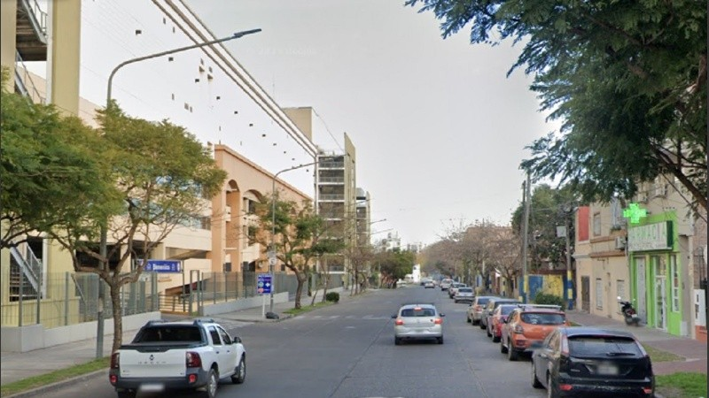
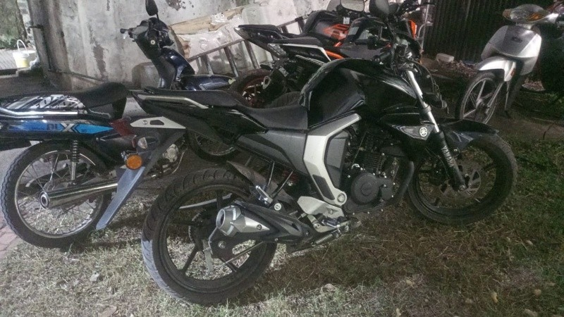
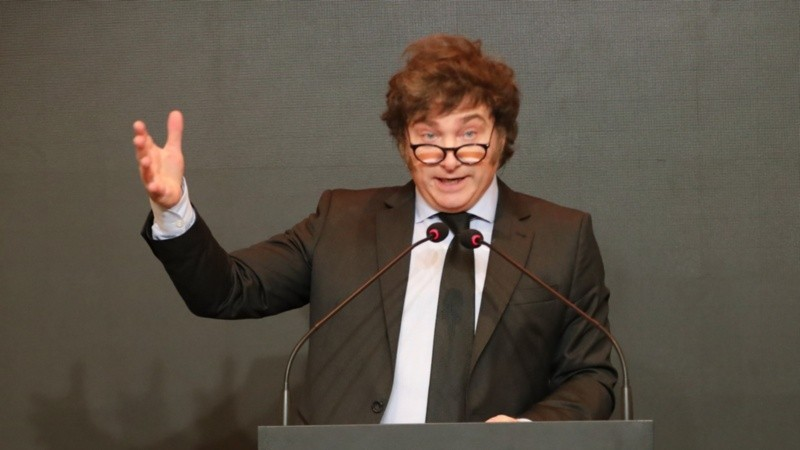
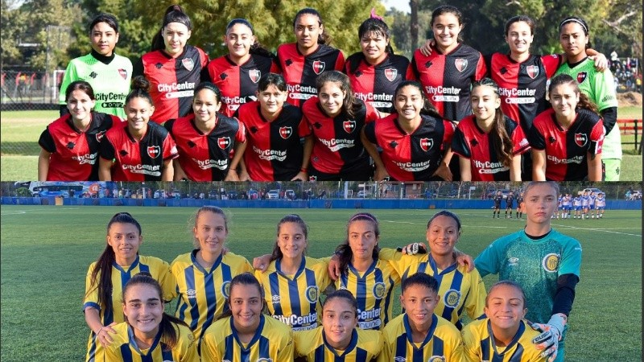
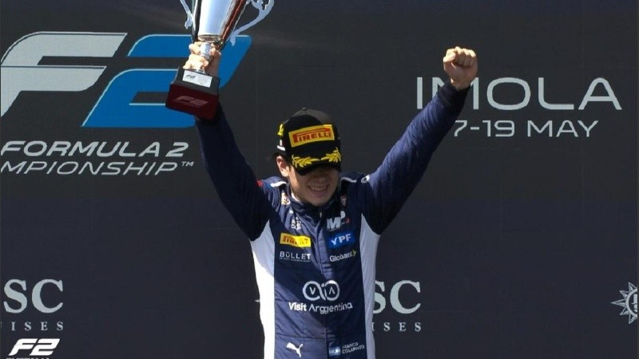
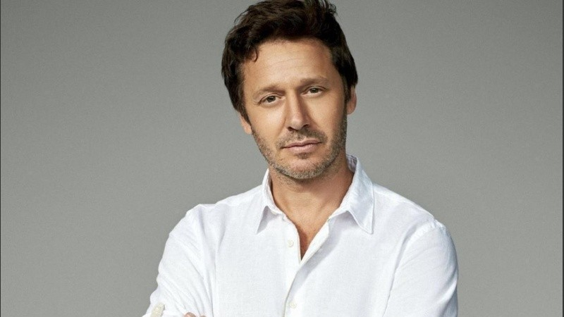

 Encontró a su vecina sin vida y la policía busca a su pareja como principal sospechoso de femicidio
 Atrapan a joven con captura por homicidio y secuestran dos motos robadas en aguantadero de zona norte
Pedro Sánchez cargó contra Javier Milei y cuestionó su visita a España: “Representamos todo lo que odian”
El reparto del Iapos que Pullaro quiere dinamitar, el chiste de Kicillof en Rosario y la economía de Milei: más Macri que Menem
Pullaro y Kicillof en Rosario: "El narcotráfico no entiende de límites provinciales ni banderías políticas"
 Milei viaja a España para presentar su libro y asistir a la convención del partido de derecha Vox
 Hacen historia: las juveniles de fútbol femenino de Central y Newell’s juegan por primera vez los clásicos de AFA
 Histórico primer triunfo de Franco Colapinto en Fórmula 2 con una maniobra magistral y homenaje a Traverso
Christian Nodal contó que tanto Cazzu como su hija estuvieron cerca de morir durante el parto: "Empezaron a bajar los latidos"
 Benjamín Vicuña estrenó obra el día que Blanca hubiese cumplido años: "Son fechas que me llevan puesto y la gente que me conoce lo sabe"